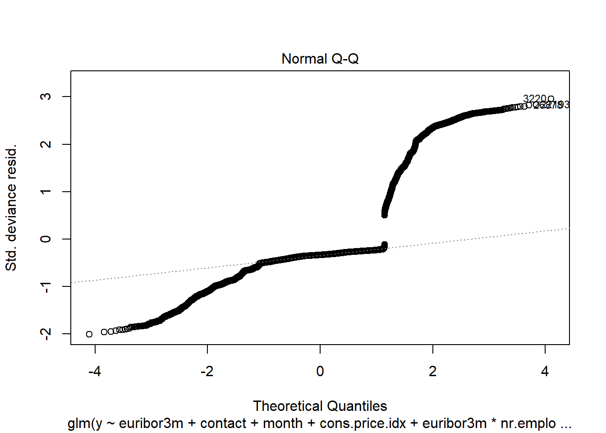

Bank Marketing Analysis Project
D. Bracy , H.H. Nguyen, S.Purvis
04/18/2020
I. Introduction
In this project, we will study different approaches to predict the success of bank telemarketing the Bank Marketing data set [1].
The retail banking industry provides financial services to families and individuals. Banks’ main functions are threefold; they issue credit in the forms of loans and credit lines, provide a secure location to deposit money, and allow a mechanism to manage finances in the form of checking and savings accounts. This analysis will focus specifically on the influential factors from direct marketing campaigns managed by a Portuguese banking institution in an attempt to get secure commitment for term deposits. Understanding not only which marketing campaigns were most effective, but also the timing of the campaign and the socioeconomic demographics will allow the retail banking industry to further target and tune their approach to securing term deposits.
Bank Marketing data from this data set were used to address two project objectives:
1. Display the ability to perform EDA and perform a logistic regression analysis and provide interpretation of the regression coefficients including hypothesis testing, and confidence intervals. 2. With a simple logistic regression model as a baseline, implement additional competing models to improve on prediction performance metrics.
II. Data Description
The team was provided a substantial marketing dataset. It was comprised of categorical and continuous variables and a resulting binary result (Y/N). The data ranges from May 2008 to November 2010. As described in the table below, we have equal counts of numeric and categorical variables. There are demographics, data related to the depth and breadth of the marketing campaign, and market indicators included in this set.
| Variable | Type | Description |
|---|---|---|
| Age | Numeric | Age of the Individual |
| Job | Categorical | Type of job held |
| Marital | Categorical | Marital Status |
| Education | Categorical | Level of Education of individual |
| Default | Categorical | Y/N/Unknown on whether the individual has credit in default |
| Housing | Categorical | Y/N/Unknown on whether the individual has a housing loan |
| Loan | Categorical | Y/N/Unknown on whether the individual has a personal loan |
| Contact | Categorical | Contact Communication Type |
| Month | Categorical | Month of last contact |
| Day_of_Week | Categorical | Day of the week of last contact – Weekdays Only |
| Duration | Numeric | Duration of last contact, in seconds. *should only be used as a benchmark, since it can’t be known beforehand |
| Campaign | Numeric | Number of contacts performed during this campaign for this client |
| Pdays | Numeric | Number of days that passed by after a client was contacted from a previous campaign (999 means not contacted previously) |
| Previous | Numeric | Number of contacts performed before this campaign for this client |
| Poutcome | Categorical | Outcome of previous marketing campaign |
| Emp.var.rate | Numeric | Employment variation rate – quarterly indicator |
| Cons.price.idx | Numeric | Consumer Price Index – monthly indicator |
| Cons.conf.idx | Numeric | Consumer confidence index – monthly indicator |
| Euribor3m | Numeric | Euribor (Euro Interbank Offered Rate) 3 month rate – daily indicator |
| Nr.employed | Numeric | Number of employees – quarterly indicator |
| Y | Binary | Did Client subscribe to a term deposit |
III. Exploratory Data Analysis (EDA)
During our preliminary assessment of the data, we first evaluated the impact of missing data. We found that technically we did not have any missing data, but we were provided a fair amount of unknown values. The original dataset has thousands of observations. Because we did not feel limited by our dataset size, we decided to exclude any observation that has an unknown record recorded in any of the variables. This left us over 30,000 complete observations to work with. We also can see that the variable month only has 10 levels (no Jan and Feb). Next, we evaluated the normality of all continuous variables. We employed box plots and bar charts to visually inspect distribution. We observed right skewness in Age, but we can rely on the central limit theorem for normality assumptions in spite of visual indications.
We next investigated correlation. As shown in the correlation plot below,
most of the relationships between these predictors have random behavior. Most correlations are close to zero or between the interval (-0.4,0.4). However, there are some common sense correlations, particularly between specific factors in variables. For example: cons.price.idx vs. emp.var.rate are positively correlated. This is reasonable as both are market indicators that would naturally tether together. Some very strong and positive correlations can be seen easily such that emp.var.rate vs. euribor3m, emp.var.rate vs. nr.employed and euribor3m vs. nr.employed, involved three colinear predictors – Employment variation rate, Number of employees and Offered rate.
We excluded duration from the model selection process, because it is an indicator variable that can be utilized as a benchmark, but is not known before the calls are made, so should not be used in prediction. Additionally, we ran a test of variable importance by using Boruta package. The Boruta algorithm is a wrapper built around the random forest classification algorithm. It provided some additional insight into which variables are “important” and in what order. We noted that Marital Status, Loan, Default and Housing are all relatively less important than other variables. We will revisit this insight as we approach interactions.
Our final iteration of feature engineering was to separate the data into a training and test set for all assessments going forward, consistently using the same split of test/train data for each model. With feature engineering complete, we can consider a dimension reduction method: Principal Component Analysis (PCA).
Principal Component Analysis (PCA)
Principal Component Analysis (PCA) is a tool for unsupervised learning. It is a common approach for deriving a low-dimensional set of features from a large set of variables. PCA creates new uncorrelated variables from a group of variables and the information of these new variables can be used to understand the relationship among the original variables and for other analyses such as regression model and classification that we will mention later.
First, we perform a PCA on the bank marketing data set after scaling the variables to have standard deviation. Then we plot the first few principal components to visualize the data. The three PCA plots do not show as much separation as we would hope for. We can expect our prediction algorithms to struggle a little bit in providing accurate results, due to the tightly entangled results of our subscription (y) response variable.
IV. Logistic Regression Analysis
Problem Statement
Logistic Regression is a popular method for classifying individuals, given the values of a set of explanatory variables. It is a multiple regression algorithm for a dichotomous outcome using a nonlinear function of the explanatory variables for classification. It estimates the probability that an individual is in a particular category. In the next steps, we will build predictive logistic regression models using Feature Selection methods (Forward, Backward, Stepwise). We will discuss how we build models with assumption check, parameter interpretation as well as our conclusion.
Building the model
By using this Bank Marketing data set [1], we will jump into Multiple Logistic Regression. We will predict a binary response of subscription y (Y/N) by using multiple predictors. Mathematically, the model can be generalized as follows: \[log(\frac{p(X)}{1-p(X)})=log(odds)=\beta_0+\beta_1X_1+\beta_2X_2+...+\beta_pX_p\] where \(X=(X_1,X_2,...,X_p)\) are \(p\) predictors. By using the maximum likelihood method, we can estimate \(\beta_0,\beta_1,...,\beta_p\). This method has better statistical properties than the least square approach to estimate the unknown linear regression coefficients in linear regression models. Maximum likelihood is a very general approach that is used to fit many of the nonlinear models, especially in our case here with the logistic regression model. In fact, the least squares approach is a special case of maximum likelihood mathematically. However, in this project, we use glm function to fit the model with the argument family=binomial to tell R to run logistic regression and we can also get these estimates without concerning ourselves with the details of the maximum likelihood fitting procedure. The problem can be rewritten as the following form: \[p(X)=\frac{e^{\beta_0+\beta_1X_1+\beta_2X_2+...+\beta_pX_p}}{1+e^{\beta_0+\beta_1X_1+\beta_2X_2+...+\beta_pX_p}}.\]
Feature Selection
In constructing our logistic regression algorithm, we fit various models by using forward, backward and stepwise on the full model. We reduced the initial model based on the the variables deemed insignificant. Those variables included: Marital, Education, Default, Loan and Housing. All showed insignificance in predicting subscriptions. We also used stepwise method on the simple model and the reduced model without interaction term as follows:
\[log(odds) =\beta_0+ \beta_1 * job+\beta_2 * contact+\beta_3 * month+\beta_4 * day\_of\_week+\beta_5 * campaign+\beta_6 * pdays+\beta_7 * poutcome+\beta_8 * emp.var.rate+\beta_9 * cons.price.idx+\beta_10 * cons.conf.idx+\beta_11 * nr.employed.\]
By checking VIFs (explained in Assumption Checking), we arrive the final model (without emp.var.rate):
\[log(odds) =\beta_0+ \beta_1 * job+\beta_2 * contact+\beta_3 * month+\beta_4 * day\_of\_week+\beta_5 * campaign+\beta_6 * pdays+\beta_7 * poutcome++\beta_8 * cons.price.idx+\beta_9 * cons.conf.idx+\beta_10 * nr.employed.\]
When assessing fit, we determined that we would include AIC, AUC and look at the specificity/sensitivity. Our “smaller model” produced an AIC of 14664, and AUC of 0.8067405 and accuracy 0.8764.
Model Analysis
After Feature Selection, the optimal model is best described as:
\[log(odds) =\beta_0+ \beta_1 * job+\beta_2 * contact+\beta_3 * month+\beta_4 * day\_of\_week+\beta_5 * campaign+\beta_6 * pdays+\beta_7 * poutcome++\beta_8 * cons.price.idx+\beta_9 * cons.conf.idx+\beta_10 * nr.employed.\]
Next, we will go through analysis steps related to the final model.
Assumption Checking
Logistic regression does not make many of the key assumptions of linear regression and general linear models that are based on ordinary least squares algorithms – particularly regarding linearity, normality, homoscedasticity, and measurement level. First, logistic regression does not require a linear relationship between the dependent and independent variables. Second, the error terms (residuals) do not need to be normally distributed. Third, homoscedasticity is not required. Finally, the dependent variable in logistic regression is not measured on an interval or ratio scale. However, some other assumptions still apply.
Binary logistic regression requires the dependent variable to be binary and ordinal logistic regression requires the dependent variable to be ordinal. In this model, our response variable is categorical (Y/N) then this assumption is good. We assume the observations to be independent of each other to perform the analysis. We also check the linearity assumption between independent variables and log odds by using Global Null Hypothesis test (Likelihood Ratio, Score, Wald). Here we use Likelihood Ratio Test, shown below.
We also can perform the Wald test (Anova(simple.model, type=“II”, test=“Wald”)) to get the similar result as Likelihood Ratio Test. Another way to get Likelihood Ratio Test result by this code anova(MyGLM, test=“LRT”). Although this analysis does not require the dependent and independent variables to be related linearly, it requires that the independent variables are linearly related to the log odds. By p values < 0.05, we reject the null hypothesis. It means that at least one explanatory variable in the model is significant.
Here, logistic regression typically requires a large sample size then this assumption is satisfied based on the data set [1].
Logistic regression requires there to be little or no multicollinearity among the independent variables. This means that the independent variables should not be too highly correlated with each other. By checking the VIF of the reduced model above,
the VIF of emp_var_rate and nr_employed are high. Then we decide to remove emp_var_rate and we check again VIFs with the new model.
The new model now looks good. We will choose it as our final model for this objective.
We evaluated the Cook’s D Plot and Leverage plot to assess assumption violations. Cook’s D did not return a value above 0.0020, showing that there are no significant outliers to consider. The Residual Leverage plot also supports this, with only one value above 0.020.
Hypothesis Tests
We can test for a Global Null Hypothesis with a Likelihood Ratio test.
We can perform Score or Wald test for Global Null Hypothesis. Alternatively, we can run ANOVA to get more information.
Because our p value is less than 0.05,we reject the null hypothesis. It means that at least one explanatory variable in the model is significant in determining the response.
Before a model is relied upon to draw conclusions or predict future outcomes we should check, as far as possible, that the model we have assumed is correctly specified. That is, that the data do not conflict with assumptions made by the model. For binary outcomes logistic regression is the most popular modelling approach. We now look at the popular, but sometimes criticized, Hosmer-Lemeshow goodness of fit test for logistic regression. The p value is less than 0.05, affirming our model is calibrated.
The ROC curve calculation shows an AUC of 0.8067405 (see Feature Selection above for plot).
Interpretation
We use predict() function in R to predict the probability of securing commitment for term deposits (Y/N). The type=“response” option for the output form \(P(Y=1|X)\) as opposed to other information such as the logit. Below are the first ten probabilities:
We know that these values correspond to the probability of securing commitment for term deposits “yes” rather than “no”. We can check it easily by using the contrasts() function, which indicates that R has created a dummy variable with a 1 to indicate “yes”.
Here are the summary statistics for the final model.

To access just the coefficients for this model, we use the coef() function.
We can use the confint() function (using profiled log-likelihood) or confint.default() function (using standard errors) to obtain confidence intervals for the coefficient estimates. Note that for logistic models, confidence intervals are based on the profiled log-likelihood function.
Recall that we are calculating toward a yes or no outcome. Each coefficient described adds or detracts from the total. The y-intercept is set at -58.83 (related to log(odds) (with confidence interval of [50.03, 67.59]). When looking at the levels of Job, blue collar and services are both significant and detrimental toward the overall value (both at -0.20 with CI [-0.35, -0.07] and [-0.38, 0.03] respectively). Alternatively, retired and student both significantly impact the outcome positively. Retired increases the value by 0.29 (CI of [0.11, 0.47]) while students increase by 0.29 (with CI of [0.06, 0.52]). The method of contact is also of importance, where telephone calls (versus cell phone contact) decreases the overall outcome by -0.54 (with CI of [-0.69, -0.40]). Specific Months had disparate impact. The month of May produces the lowest coefficient with -0.65 and confidence interval of (-0.81, -0.49). March provided the highest coefficient of 0.81 with confidence intervals of (0.56, 1.06).
To predict the odds of getting secure commitment for term deposits (Y/N), we only put the value of each predictor inside the model and take the exponential to get probability (from 0 to 1). Notice that with categorical explanatory variables, Yes is 1 and No is 0.
Logistic Regression Conclusion
The simple model produced in logistic regression highlights a few key factors among the variables that indicate importance. As the presumed goal is achieving a Yes result, specific items could be focused on in future solicitation efforts to employ resources efficiently. Students and Retired persons both tested as factors worth expanding on. Additionally, cell phone contact would be advised. Specific months proved significant, but that is likely due to the index numbers more than the actual month itself. We must point out that this is an observational study, so no true conclusions can be made from this model about the larger population or around causality. The findings are nonetheless interesting.
V. Alternative Models
Problem Statement
With our simple logistic regression model as a baseline, the team performed additional competing models evaluations to improve on prediction performance metrics.
Adding Complexity to Logistic Regression
When inserting complexity in the model, the team revisited the Boruta analysis of variable importance. Euribor3M was the most important single variable identified in the assessment. This variable, as mentioned above, is a lending rate banks use when specifically lending on loans with a 3 month maturity. We applied this to month as the variable is time based. Additionally, we included interactions with pdays, age and nr.employed believing we may find that socioeconomic factors and timing would impart significance. Finally, we included an interaction between pdays and campaign with success. Our final model produced an AIC of 14579, showing that interactions in this case didn’t add real value. Furthermore, they would require a more cumbersome interpretation of the model without clear influence by single variables. Additionally, it produced a ROC of 0.809, again not performing significantly better than the simple logistic regression model.
Looking at Continuous Predictors
LDA
Linear Discriminant Analysis allows for exploration of continuous variables by blending impacts across all variables in a single model. When we performed this analysis, we found a misclassification error of .625 but a AUC of 0.929. The challenge in LDA is that all components are included in each new model, thereby masking significance in single variables. However, the coefficients in LD1 do still provide insight. Euribor3m, Cons.Price.Idx, and Emp.Var.Rate appear to significantly overshadow the other included variables. We found this same significance in the other model assessments.
KNN
In the real world, we cannot always predict qualitative response using the Bayes classifier because computing Bayer classifier is impossible. The reason is that we do not know the conditional distribution of Y given X. One of the ideas is K-nearest neighbors (KNN) classifier. It is a simple, supervised machine learning algorithm that can be used to solve both classification and regression problems. By using the KNN regression method, it has an 88% overall accuracy, with 97% sensitivity when performed outright. However, specificity suffers with only 29.6% accuracy. Scaling the data alone did not improve the performance of KNN. We then fed KNN algorithm the limited set of predictors used in Logistic Regression, which also did not improve performance. Hyper-tuning the data maintained the overall accuracy of 88%. It improved specificity at the cost of sensitivity though. Sensitivity is instead 68.3% whereas specificity is now 89.7%.
VI. Model Performance Comparisons
Because of the nature of the dataset, emphasis is placed on correctly predicting a positive outcome (i.e. the customer subscribes to term deposits). So for comparison purposes in the context of our goals, we’re going to focus on the following metrics: Area Under the Curve (AUC), Overall Accuracy, Precision (percentage of predicted positive events out of all positive events), and Recall (Ability to correctly predict when an event occurs).
Performance Comparison table
| Model | AUC | Overall Accuracy | Precision (Pos Pred Values) | Recall (Sensitivity) |
|---|---|---|---|---|
| Logistic Regression (Simple) | .809 | .876 | .49 | .518 |
| Logistic Regression (Interaction) | .809 | .877 | .521 | .519 |
| Linear Discriminate Analysis (LDA) | .805 | .884 | .406 | .564 |
| K-Nearest Neighbors (KNN) continuous | .609 | .888 | .682 | .233 |
| K-Nearest Neighbors (KNN) categorical | .632 | .886 | .610 | .291 |
| Decision Trees | .721 | .886 | .186 | .7 |
| Random Forest | .793 | .871 | .431 | .495 |
For all models, in order to compare equally, we ran both with the full data, and with the subset used in the simple logistic regression model. The additional data points did not significantly help any of the models, so for the final comparison we used the subset used in the simple regression model for comparison.
During modeling of categorical KNN, we utilized a full model, with all variables in it from the simple logistic regression model and performed ten iterations of cross validation. Using KNN with scaled, continuous predictors and the same variables broken out in a one-hot encoded fashion, we were able to obtain much better precision metrics, but at the expense of recall. We employed a hyper-tuning approach to find the best value of K, retraining the model on each value of K up to the square root of the number of observations in our model. It was determined the best value of K was 60, and this is what was used for the tuned KNN model.
Ultimately, the logistic regression models had the best performance with the highest AUC score, and performing best on overall positive prediction metrics.
VII. Conclusion
The business problem we were tasked to solve was how can we best predict subscriptions for term deposits. The team decided early on that while overall accuracy was certainly important, priority should be given to the model that accurately predicts the yes outcome the best. With that in mind, we found that
\[log(odds) =\beta_0+ \beta_1 * job+\beta_2 * contact+\beta_3 * month+\beta_4 * day\_of\_week+\beta_5 * campaign+\beta_6 * pdays+\beta_7 * poutcome++\beta_8 * cons.price.idx+\beta_9 * cons.conf.idx+\beta_10 * nr.employed.\]
would be recommended. Furthermore, as stated previously, this is an observational study. We would be remiss in failing to recognize the economic parallels between this data time frame and our current economic climate. Our next steps would be to identify, if possible, year as well in the dataset. That would allow us to attempt to tune the model a bit in line with today’s economic volatility.
Acknowledgement
We would like to express our sincere gratitude to Dr. Jacob Turner (SMU) for excellent course design that we have obtained during the Spring semester 2020 of MSDS SMU.
References
[1] Bank Marketing Data Set https://archive.ics.uci.edu/ml/datasets/Bank%20Marketing#
[2] Albright, W. L. Winston, Business Analytics - Data Analysis and Decision Making, 7th Edition, Cengage, 2019.
[3] Anderson et al., Statistics for Business & Economics, Cengage, 2020.
[4] G. Rodriguez, Logit Models in R, https://data.princeton.edu/wws509/r/c3s1, Princeton.
[5] James et al., An Introduction to Statistical Learning with Application in R, Springer, 2017.
[6] T. Hastie et al., The Elements of Statistical Learning, Data Mining, Inference, and Prediction, 2nd Edition, Springer, 2017.
[7] D. Hosmer, S. Lemeshow, Applied Logistic Regression, 2th Edition, John Wiley & Sons, 2000.
[8] B. W. Lindgren, Statistical Theory, 3th Edition, MacMillan Publishing, 1976.
[9] D. Montgomery, E. A. Peck, G. G. Vining, Introduction to Linear Regression Analysis, 5th Edition, John Wiley & Sons, 2012.
[10] Ramsey and Schafer, The Statistical Sleuth, A Course in Methods of Data Analysis, 3rd Edition, Cengage, 2013.
[11] P. Pandey, A Guide to Machine Learning in R for Beginners: Logistic Regression, https://medium.com/analytics-vidhya/a-guide-to-machine-learning-in-r-for-beginners-part-5-4c00f2366b90, Medium, 2018.
[12] P. Pandey, Simplifying the ROC and AUC metrics, https://towardsdatascience.com/understanding-the-roc-and-auc-curves-a05b68550b69, Towards Data Science, 2019.
[13] UCLA - Logit Regression R Data Analysis Examples, https://stats.idre.ucla.edu/r/dae/logit-regression/
[14] J. S. Long, Regression Models for Categorical and Limited Dependent Variables, Thousand Oaks, CA: Sage Publications, 1997.
Dustin Bracy – Southern Methodist University – Email: dbracy@smu.edu
Huy Hoang Nguyen – Southern Methodist University – Email: hoangnguyen@smu.edu
Sabrina Purvis – Southern Methodist University – Email: spurvis@smu.edu
Code Appendix
Feature Engineering
# read in 'Bank Additional Full' file
bankfull = read.csv("./data/bank-additional-full.csv",header = TRUE, sep = ";", stringsAsFactors = TRUE)
# convert "unknown" values to NA and view percentage of missing values
bankfull[bankfull == "unknown"] <- NA
plotNAs(bankfull)
# Remove duration from model, as this isn't known until 'y' is known
bankfull <- bankfull %>% dplyr::select(!duration)
# Drop NAs
bankfull <- bankfull %>% drop_na()
bankfull$job <- droplevels(bankfull$job, 'unknown')
bankfull$loan <- droplevels(bankfull$loan, 'unknown')
bankfull$default <- droplevels(bankfull$default, 'unknown')
bankfull$education <- droplevels(bankfull$education, 'unknown')
bankfull$housing <- droplevels(bankfull$housing, 'unknown')
bankfull$marital <- droplevels(bankfull$marital, 'unknown')
# Onehot encode categorical variables to binary:
dmy <- dummyVars(" ~ .", data = bankfull)
trsf <- data.frame(predict(dmy, newdata = bankfull))
# Remove binary encoded response
trsf$y <- ifelse(trsf$y.no == 1, 0, 1)
bankbin <- subset(trsf, select = -c(y.no, y.yes))
# Clean up environment variables:
rm(dmy, trsf)
# Split the data into training and test set
set.seed(115)
trainIndices = sample(1:dim(bankfull)[1],round(.8 * dim(bankfull)[1]))
# Build full test/train
full.train = bankfull[trainIndices,]
full.test = bankfull[-trainIndices,]
# Build binary test/train
bin.train = bankbin[trainIndices,]
bin.test = bankbin[-trainIndices,]
# Scale binary data
scaledbin <- data.frame(scale(bankbin))
scaledbin$y <- bankbin$y
# Build scaled test/train
scaled.train = scaledbin[trainIndices,]
scaled.test = scaledbin[-trainIndices,]EDA
df <- bankfull # input dataframes for plots
#Wide:
ggarrange(
percentagePlot(df, fct_rev(df$job), "Job Type") + coord_flip(),
percentagePlot(df, fct_rev(df$education), "Education Level") + coord_flip() ,
ncol=1, nrow=2)ggarrange(
percentagePlot(df, fct_rev(df$month), "Month") + coord_flip(),
percentagePlot(df, fct_rev(df$day_of_week), "Day of the Week") + coord_flip(),
ncol=1, nrow=2)ggarrange(
mutate(df, prev = as.factor(previous)) %>% ggplot(aes(prev, y, fill=y)) + geom_col(),
df %>% ggplot(aes(y, age)) + geom_boxplot() + coord_flip(),
df %>% ggplot(aes(month, y, fill=y)) + geom_col() ,
df %>% ggplot(aes(y, campaign)) + geom_boxplot() + coord_flip() ,
ncol = 1, nrow=4)ggarrange(
percentagePlot(df, df$previous, "Previous") + coord_flip(),
df %>% ggplot(aes(day_of_week, y, fill=y)) + geom_col() ,
ncol = 1, nrow=2)#Square:
ggarrange(
percentagePlot(df, df$marital, "Marital Status"),
percentagePlot(df, df$contact, "Contact Method") ,
percentagePlot(df, df$housing, "Housing"),
percentagePlot(df, df$loan, "Loan"),
percentagePlot(df, df$default, "Default"),
percentagePlot(df, df$poutcome, "Poutcome"),
ncol = 2, nrow=3)ggarrange (
df %>% ggplot(aes(campaign, y, fill=y)) + geom_col() ,
df %>% ggplot(aes(previous, y, fill=y)) + geom_col() ,
df %>% ggplot(aes(emp.var.rate, y, fill=y)) + geom_col() ,
df %>% ggplot(aes(y, emp.var.rate)) + geom_boxplot() + coord_flip() ,
df %>% ggplot(aes(y, cons.price.idx)) + geom_boxplot() + coord_flip() ,
df %>% ggplot(aes(cons.conf.idx, y, fill=y)) + geom_col() ,
ncol = 2, nrow = 3)
ggarrange (
df %>% ggplot(aes(y, cons.conf.idx)) + geom_boxplot() + coord_flip() ,
df %>% ggplot(aes(euribor3m, y, fill=y)) + geom_col(),
df %>% ggplot(aes(y, euribor3m)) + geom_boxplot() + coord_flip() ,
df %>% ggplot(aes(nr.employed, y, fill=y)) + geom_col() + coord_flip() ,
df %>% ggplot(aes(y, nr.employed)) + geom_boxplot() + coord_flip(),
df %>% ggplot(aes(cons.price.idx, y, fill=y)) + geom_col() + coord_flip() ,
ncol = 2, nrow = 3)Correlation Plot

Scatterplot Matrix

Generalized Pairs Plot
Alt Correlation Plot
#additional EDA Graphics
png(height=800, width=800, pointsize=15, file="./figures/bank/ggcorr.png")
ggcorr(df)
dev.off()
# Build Correlation Plot
buildCorrPlot(bankbin)
# Build Pairs Plot
png(height=800, width=800, pointsize=15, file="./figures/bank/pairs.png")
bankfull %>% keep(is.numeric) %>% ggpairs()
dev.off()
# Identify significant features
boruta_output <- Boruta(y ~ ., data=bankfull, doTrace=2)
boruta_signif <- names(boruta_output$finalDecision[boruta_output$finalDecision %in% c("Confirmed", "Tentative")])
print(boruta_signif)
# Build Variable Importance Plot
png(height=800, width=800, pointsize=15, file="./figures/bank/variableImportance.png")
plot(boruta_output, cex.axis=.7, las=2, xlab="", main="Variable Importance")
dev.off()Logistic Regression
# Build feature list:
x<-colnames(bankbin)
x<-x[x != "y"]
x<-paste(x, collapse='+')
x # copy this printed value into the model## [1] "age+job.admin.+job.blue.collar+job.entrepreneur+job.housemaid+job.management+job.retired+job.self.employed+job.services+job.student+job.technician+job.unemployed+marital.divorced+marital.married+marital.single+education.basic.4y+education.basic.6y+education.basic.9y+education.high.school+education.illiterate+education.professional.course+education.university.degree+default.no+default.yes+housing.no+housing.yes+loan.no+loan.yes+contact.cellular+contact.telephone+month.apr+month.aug+month.dec+month.jul+month.jun+month.mar+month.may+month.nov+month.oct+month.sep+day_of_week.fri+day_of_week.mon+day_of_week.thu+day_of_week.tue+day_of_week.wed+campaign+pdays+previous+poutcome.failure+poutcome.nonexistent+poutcome.success+emp.var.rate+cons.price.idx+cons.conf.idx+euribor3m+nr.employed"rm(x)
# Everything model:
full.model <- glm(y ~ age+job+marital+education+default+housing+loan+contact+month+day_of_week+campaign+pdays+previous+poutcome+
emp.var.rate+cons.price.idx+cons.conf.idx+euribor3m+nr.employed, data = full.train, family = "binomial")
summary(full.model)##
## Call:
## glm(formula = y ~ age + job + marital + education + default +
## housing + loan + contact + month + day_of_week + campaign +
## pdays + previous + poutcome + emp.var.rate + cons.price.idx +
## cons.conf.idx + euribor3m + nr.employed, family = "binomial",
## data = full.train)
##
## Deviance Residuals:
## Min 1Q Median 3Q Max
## -2.0914 -0.4184 -0.3302 -0.2666 2.9609
##
## Coefficients:
## Estimate Std. Error z value Pr(>|z|)
## (Intercept) -2.788e+02 4.094e+01 -6.811 9.69e-12 ***
## age -9.766e-04 2.687e-03 -0.363 0.716273
## jobblue-collar -1.259e-01 8.785e-02 -1.433 0.151768
## jobentrepreneur -3.910e-02 1.327e-01 -0.295 0.768303
## jobhousemaid 9.258e-02 1.592e-01 0.581 0.560974
## jobmanagement 7.418e-03 9.046e-02 0.082 0.934648
## jobretired 3.512e-01 1.200e-01 2.926 0.003435 **
## jobself-employed 2.837e-02 1.223e-01 0.232 0.816623
## jobservices -1.822e-01 9.545e-02 -1.908 0.056332 .
## jobstudent 3.046e-01 1.262e-01 2.414 0.015789 *
## jobtechnician 8.343e-02 7.473e-02 1.116 0.264223
## jobunemployed 2.575e-02 1.363e-01 0.189 0.850151
## maritalmarried 9.890e-03 7.290e-02 0.136 0.892080
## maritalsingle 1.128e-02 8.269e-02 0.136 0.891521
## educationbasic.6y 2.198e-01 1.369e-01 1.605 0.108412
## educationbasic.9y -3.016e-02 1.073e-01 -0.281 0.778630
## educationhigh.school 1.132e-01 1.026e-01 1.103 0.269967
## educationilliterate 7.569e-01 8.657e-01 0.874 0.381966
## educationprofessional.course 6.860e-03 1.119e-01 0.061 0.951104
## educationuniversity.degree 1.432e-01 1.027e-01 1.394 0.163175
## defaultyes -8.550e+00 1.136e+02 -0.075 0.939997
## housingyes -6.221e-02 4.421e-02 -1.407 0.159402
## loanyes 2.032e-02 6.040e-02 0.336 0.736586
## contacttelephone -8.239e-01 8.197e-02 -10.052 < 2e-16 ***
## monthaug 5.045e-01 1.320e-01 3.821 0.000133 ***
## monthdec 4.685e-01 2.258e-01 2.075 0.038025 *
## monthjul 8.291e-02 1.043e-01 0.795 0.426447
## monthjun -7.266e-01 1.344e-01 -5.407 6.40e-08 ***
## monthmar 1.618e+00 1.567e-01 10.321 < 2e-16 ***
## monthmay -3.173e-01 8.822e-02 -3.597 0.000322 ***
## monthnov -4.289e-01 1.309e-01 -3.277 0.001051 **
## monthoct 2.320e-01 1.668e-01 1.391 0.164350
## monthsep 4.072e-01 1.957e-01 2.081 0.037458 *
## day_of_weekmon -1.494e-01 7.192e-02 -2.077 0.037813 *
## day_of_weekthu 1.137e-01 6.991e-02 1.626 0.103913
## day_of_weektue 6.536e-02 7.227e-02 0.904 0.365804
## day_of_weekwed 2.104e-01 7.093e-02 2.966 0.003021 **
## campaign -4.245e-02 1.169e-02 -3.631 0.000282 ***
## pdays -8.724e-04 2.509e-04 -3.477 0.000507 ***
## previous -5.005e-02 6.864e-02 -0.729 0.465915
## poutcomenonexistent 4.768e-01 1.058e-01 4.508 6.54e-06 ***
## poutcomesuccess 9.695e-01 2.456e-01 3.947 7.92e-05 ***
## emp.var.rate -1.610e+00 1.484e-01 -10.847 < 2e-16 ***
## cons.price.idx 2.389e+00 2.681e-01 8.912 < 2e-16 ***
## cons.conf.idx 3.321e-02 8.515e-03 3.900 9.62e-05 ***
## euribor3m 9.145e-02 1.444e-01 0.633 0.526613
## nr.employed 1.060e-02 3.371e-03 3.146 0.001656 **
## ---
## Signif. codes: 0 '***' 0.001 '**' 0.01 '*' 0.05 '.' 0.1 ' ' 1
##
## (Dispersion parameter for binomial family taken to be 1)
##
## Null deviance: 18496 on 24389 degrees of freedom
## Residual deviance: 14472 on 24343 degrees of freedom
## AIC: 14566
##
## Number of Fisher Scoring iterations: 10# Smaller model:
simple.model0 <- glm(y~job+contact+month+day_of_week+campaign+pdays+poutcome+emp.var.rate+cons.price.idx+cons.conf.idx+nr.employed, data=full.train, family="binomial")
#test VIF and remove emp.var.rate
car::vif(simple.model0)## GVIF Df GVIF^(1/(2*Df))
## job 1.184222 10 1.008490
## contact 2.154747 1 1.467906
## month 23.787469 9 1.192515
## day_of_week 1.050404 4 1.006166
## campaign 1.044257 1 1.021889
## pdays 9.791950 1 3.129209
## poutcome 10.838628 2 1.814444
## emp.var.rate 129.528692 1 11.381067
## cons.price.idx 49.555293 1 7.039552
## cons.conf.idx 2.659172 1 1.630697
## nr.employed 68.861952 1 8.298310#Final model after removing emp.var.rate
simple.model <- glm(y~job+contact+month+day_of_week+campaign+pdays+poutcome+cons.price.idx+cons.conf.idx+nr.employed, data=full.train, family="binomial")
car::vif(simple.model)## GVIF Df GVIF^(1/(2*Df))
## job 1.184400 10 1.008498
## contact 1.703233 1 1.305080
## month 4.837624 9 1.091529
## day_of_week 1.045751 4 1.005608
## campaign 1.041935 1 1.020752
## pdays 9.755052 1 3.123308
## poutcome 10.770332 2 1.811579
## cons.price.idx 1.825863 1 1.351245
## cons.conf.idx 2.354249 1 1.534356
## nr.employed 2.000092 1 1.414246summary(simple.model)##
## Call:
## glm(formula = y ~ job + contact + month + day_of_week + campaign +
## pdays + poutcome + cons.price.idx + cons.conf.idx + nr.employed,
## family = "binomial", data = full.train)
##
## Deviance Residuals:
## Min 1Q Median 3Q Max
## -2.1847 -0.4254 -0.3403 -0.2608 3.0005
##
## Coefficients:
## Estimate Std. Error z value Pr(>|z|)
## (Intercept) 58.8300356 4.4779606 13.138 < 2e-16 ***
## jobblue-collar -0.2178916 0.0713077 -3.056 0.002246 **
## jobentrepreneur -0.0601885 0.1307795 -0.460 0.645352
## jobhousemaid 0.0086416 0.1510807 0.057 0.954387
## jobmanagement 0.0042552 0.0878949 0.048 0.961388
## jobretired 0.2908000 0.0920247 3.160 0.001578 **
## jobself-employed 0.0045143 0.1207710 0.037 0.970183
## jobservices -0.2084171 0.0903924 -2.306 0.021128 *
## jobstudent 0.2906697 0.1175643 2.472 0.013420 *
## jobtechnician -0.0044645 0.0658277 -0.068 0.945929
## jobunemployed -0.0377159 0.1343229 -0.281 0.778875
## contacttelephone -0.5467301 0.0734788 -7.441 1.00e-13 ***
## monthaug -0.2351855 0.1094118 -2.150 0.031591 *
## monthdec 0.0463726 0.2078535 0.223 0.823456
## monthjul 0.1854132 0.1012180 1.832 0.066978 .
## monthjun 0.2430801 0.0992575 2.449 0.014326 *
## monthmar 0.8144435 0.1273540 6.395 1.60e-10 ***
## monthmay -0.6557447 0.0796687 -8.231 < 2e-16 ***
## monthnov -0.4453242 0.1019101 -4.370 1.24e-05 ***
## monthoct -0.1322166 0.1335446 -0.990 0.322147
## monthsep -0.5145366 0.1455602 -3.535 0.000408 ***
## day_of_weekmon -0.1750918 0.0714202 -2.452 0.014223 *
## day_of_weekthu 0.0846148 0.0692819 1.221 0.221968
## day_of_weektue 0.0339203 0.0716436 0.473 0.635886
## day_of_weekwed 0.1696541 0.0703876 2.410 0.015940 *
## campaign -0.0471891 0.0117710 -4.009 6.10e-05 ***
## pdays -0.0008934 0.0002313 -3.862 0.000112 ***
## poutcomenonexistent 0.5399001 0.0686644 7.863 3.75e-15 ***
## poutcomesuccess 0.9559224 0.2323239 4.115 3.88e-05 ***
## cons.price.idx -0.0509298 0.0461708 -1.103 0.269995
## cons.conf.idx 0.0165506 0.0055957 2.958 0.003099 **
## nr.employed -0.0106255 0.0003626 -29.306 < 2e-16 ***
## ---
## Signif. codes: 0 '***' 0.001 '**' 0.01 '*' 0.05 '.' 0.1 ' ' 1
##
## (Dispersion parameter for binomial family taken to be 1)
##
## Null deviance: 18496 on 24389 degrees of freedom
## Residual deviance: 14600 on 24358 degrees of freedom
## AIC: 14664
##
## Number of Fisher Scoring iterations: 6lrtest(simple.model) #Likelihood ratio test## Likelihood ratio test
##
## Model 1: y ~ job + contact + month + day_of_week + campaign + pdays +
## poutcome + cons.price.idx + cons.conf.idx + nr.employed
## Model 2: y ~ 1
## #Df LogLik Df Chisq Pr(>Chisq)
## 1 32 -7300.0
## 2 1 -9248.1 -31 3896.3 < 2.2e-16 ***
## ---
## Signif. codes: 0 '***' 0.001 '**' 0.01 '*' 0.05 '.' 0.1 ' ' 1#confidence intervals for simple model
summary(simple.model$coefficients)## Min. 1st Qu. Median Mean 3rd Qu. Max.
## -0.65574 -0.14294 0.00168 1.84924 0.17359 58.83004#CI_lower <- coefficients(simple.model)[2] - 1.96*summary(simple.model)$coefficients[2,2]
#CI_upper <- coefficients(simple.model)[2] + 1.96*summary(simple.model)$coefficients[2,2]
confint(simple.model)## Waiting for profiling to be done...## 2.5 % 97.5 %
## (Intercept) 50.037765282 67.5936793209
## jobblue-collar -0.358419542 -0.0788304094
## jobentrepreneur -0.322720784 0.1904859468
## jobhousemaid -0.294317053 0.2984426199
## jobmanagement -0.169706703 0.1749523000
## jobretired 0.109527379 0.4703327249
## jobself-employed -0.236590644 0.2371708689
## jobservices -0.387745078 -0.0332578181
## jobstudent 0.058606716 0.5196423183
## jobtechnician -0.133907973 0.1241779256
## jobunemployed -0.305306430 0.2215670680
## contacttelephone -0.691926583 -0.4038442099
## monthaug -0.449692110 -0.0207397002
## monthdec -0.362968402 0.4528473672
## monthjul -0.012971283 0.3838610052
## monthjun 0.048525429 0.4376847515
## monthmar 0.564598089 1.0640446805
## monthmay -0.811514280 -0.4991421915
## monthnov -0.645683971 -0.2461042713
## monthoct -0.394013261 0.1296055090
## monthsep -0.800402032 -0.2296496200
## day_of_weekmon -0.315075222 -0.0350599569
## day_of_weekthu -0.051010701 0.2206169413
## day_of_weektue -0.106456555 0.1744325916
## day_of_weekwed 0.031835124 0.3077986085
## campaign -0.070877007 -0.0247530879
## pdays -0.001346078 -0.0004370239
## poutcomenonexistent 0.406390233 0.6756096769
## poutcomesuccess 0.501337455 1.4142912722
## cons.price.idx -0.141303631 0.0397070450
## cons.conf.idx 0.005580913 0.0275195465
## nr.employed -0.011336141 -0.0099146279#cooks D and residual plots for simple.model
plot(cooks.distance(simple.model))plot(simple.model)
pred_lm <-predict(simple.model, type='response', newdata=full.test)
# plot the prediction distribution
predictions_LR <- data.frame(y = full.test$y, pred = NA)
predictions_LR$pred <- pred_lm
plot_pred_type_distribution(predictions_LR,0.30)# choose the best threshold as 0.30
test.eval.LR = binclass_eval(as.integer(full.test$y)-1, pred_lm > 0.30)
# Making the Confusion Matrix
test.eval.LR$cm## Predicted
## Actual 0 1
## 0 4978 340
## 1 402 378# calculate accuracy, precision
acc_LR=test.eval.LR$accuracy
prc_LR=test.eval.LR$precision
recall_LR=test.eval.LR$recall
fscore_LR=test.eval.LR$fscore
#cat("Accuracy: ", acc_LR,
# "Precision: ", prc_LR,
# "Recall: ", trecall_LR,
# "FScore: ", fscore_LR
# )
# calculate ROC
rocr.pred.lr = prediction(predictions = pred_lm, labels = full.test$y)
rocr.perf.lr = performance(rocr.pred.lr, measure = "tpr", x.measure = "fpr")
rocr.auc.lr = as.numeric(performance(rocr.pred.lr, "auc")@y.values)
# print ROC AUC
rocr.auc.lr## [1] 0.8067405# plot ROC curve for Logistic Regression
plot(rocr.perf.lr,
lwd = 3, colorize = TRUE,
print.cutoffs.at = seq(0, 1, by = 0.1),
text.adj = c(-0.2, 1.7),
main = 'ROC Curve')
mtext(paste('Logistic Regression - auc : ', round(rocr.auc.lr, 5)))
abline(0, 1, col = "red", lty = 2)predictions_LR$predFactor <- ifelse(predictions_LR$pred > .3, 'yes', 'no')
LogR_simple.CM <- confusionMatrix(table(full.test$y, predictions_LR$predFactor, dnn = c("Truth", "Prediction")), positive = 'yes')
enframe(LogR_simple.CM$byClass)## # A tibble: 11 x 2
## name value
## <chr> <dbl>
## 1 Sensitivity 0.526
## 2 Specificity 0.925
## 3 Pos Pred Value 0.485
## 4 Neg Pred Value 0.936
## 5 Precision 0.485
## 6 Recall 0.526
## 7 F1 0.505
## 8 Prevalence 0.118
## 9 Detection Rate 0.0620
## 10 Detection Prevalence 0.128
## 11 Balanced Accuracy 0.726LogR_simple.CM$overall## Accuracy Kappa AccuracyLower AccuracyUpper AccuracyNull
## 0.87832076 0.43544956 0.86985218 0.88642557 0.88225648
## AccuracyPValue McnemarPValue
## 0.83490538 0.02513117# Stepwise Selection commented out to speed up knit process:
step(full.model,direction="both")
step(simple.model,direction="both")
x<- summary(simple.model)
y<- confint(simple.model)
cbind(x$coefficients,y)interaction.model <- glm(y~euribor3m+contact+month+cons.price.idx+euribor3m*nr.employed+pdays+campaign+pdays*campaign+job+euribor3m*month+euribor3m*age+euribor3m*pdays, data=full.train, family="binomial")
summary(interaction.model)##
## Call:
## glm(formula = y ~ euribor3m + contact + month + cons.price.idx +
## euribor3m * nr.employed + pdays + campaign + pdays * campaign +
## job + euribor3m * month + euribor3m * age + euribor3m * pdays,
## family = "binomial", data = full.train)
##
## Deviance Residuals:
## Min 1Q Median 3Q Max
## -2.0024 -0.4323 -0.3329 -0.2574 2.9578
##
## Coefficients:
## Estimate Std. Error z value Pr(>|z|)
## (Intercept) 3.236e+02 5.219e+01 6.199 5.68e-10 ***
## euribor3m 1.010e+01 9.910e+00 1.019 0.308002
## contacttelephone -7.224e-01 8.676e-02 -8.327 < 2e-16 ***
## monthaug -9.904e-01 4.695e-01 -2.110 0.034900 *
## monthdec -1.499e+00 5.790e-01 -2.589 0.009639 **
## monthjul -5.957e-01 4.803e-01 -1.240 0.214874
## monthjun -9.529e-01 5.072e-01 -1.879 0.060276 .
## monthmar -1.341e+00 4.725e-01 -2.839 0.004525 **
## monthmay -6.435e-01 4.651e-01 -1.384 0.166436
## monthnov -2.149e+00 5.197e-01 -4.135 3.56e-05 ***
## monthoct -3.138e+00 5.431e-01 -5.777 7.61e-09 ***
## monthsep -5.662e+00 2.167e+00 -2.613 0.008974 **
## cons.price.idx -1.390e+00 2.713e-01 -5.123 3.00e-07 ***
## nr.employed -3.846e-02 5.518e-03 -6.970 3.17e-12 ***
## pdays -1.737e-03 2.234e-04 -7.777 7.42e-15 ***
## campaign -1.880e-01 5.948e-02 -3.160 0.001575 **
## jobblue-collar -2.080e-01 7.162e-02 -2.904 0.003688 **
## jobentrepreneur -7.719e-02 1.324e-01 -0.583 0.560028
## jobhousemaid 1.949e-02 1.550e-01 0.126 0.899907
## jobmanagement 6.000e-03 8.914e-02 0.067 0.946332
## jobretired 2.652e-01 1.197e-01 2.215 0.026758 *
## jobself-employed 2.603e-02 1.211e-01 0.215 0.829880
## jobservices -2.015e-01 9.040e-02 -2.229 0.025792 *
## jobstudent 2.839e-01 1.231e-01 2.306 0.021131 *
## jobtechnician 7.639e-04 6.613e-02 0.012 0.990784
## jobunemployed 3.285e-02 1.333e-01 0.246 0.805370
## age 4.488e-03 3.535e-03 1.270 0.204259
## euribor3m:nr.employed -1.682e-03 1.882e-03 -0.893 0.371655
## pdays:campaign 1.506e-04 6.068e-05 2.482 0.013064 *
## euribor3m:monthaug 1.486e-01 3.514e-01 0.423 0.672295
## euribor3m:monthdec 2.493e-01 5.168e-01 0.482 0.629530
## euribor3m:monthjul 2.817e-01 3.532e-01 0.797 0.425240
## euribor3m:monthjun 5.826e-01 3.634e-01 1.603 0.108858
## euribor3m:monthmar 1.158e+00 3.593e-01 3.222 0.001271 **
## euribor3m:monthmay -4.166e-02 3.445e-01 -0.121 0.903757
## euribor3m:monthnov 3.067e-01 3.258e-01 0.941 0.346562
## euribor3m:monthoct 1.240e+00 3.319e-01 3.736 0.000187 ***
## euribor3m:monthsep 4.103e+00 2.418e+00 1.697 0.089783 .
## euribor3m:age -3.010e-03 1.249e-03 -2.409 0.015978 *
## euribor3m:pdays 1.033e-04 1.777e-04 0.581 0.560995
## ---
## Signif. codes: 0 '***' 0.001 '**' 0.01 '*' 0.05 '.' 0.1 ' ' 1
##
## (Dispersion parameter for binomial family taken to be 1)
##
## Null deviance: 18496 on 24389 degrees of freedom
## Residual deviance: 14509 on 24350 degrees of freedom
## AIC: 14589
##
## Number of Fisher Scoring iterations: 6#confidence intervals for simple model
summary(interaction.model$coefficients)## Min. 1st Qu. Median Mean 3rd Qu. Max.
## -5.6616 -0.6077 -0.0008 8.0630 0.2533 323.5555#CI_lower <- coefficients(interaction.model)[2] - 1.96*summary(interaction.model)$coefficients[2,2]
#CI_upper <- coefficients(interaction.model)[2] + 1.96*summary(interaction.model)$coefficients[2,2]
confint(interaction.model)## Waiting for profiling to be done...## 2.5 % 97.5 %
## (Intercept) 2.211394e+02 4.257452e+02
## euribor3m -9.349164e+00 2.950571e+01
## contacttelephone -8.947059e-01 -5.545082e-01
## monthaug -1.914908e+00 -7.246673e-02
## monthdec -2.606816e+00 -2.846291e-01
## monthjul -1.541001e+00 3.439028e-01
## monthjun -1.950583e+00 3.949178e-02
## monthmar -2.271301e+00 -4.168478e-01
## monthmay -1.560030e+00 2.650644e-01
## monthnov -3.170692e+00 -1.131752e+00
## monthoct -4.205353e+00 -2.074763e+00
## monthsep -9.931335e+00 -1.431734e+00
## cons.price.idx -1.921246e+00 -8.576761e-01
## nr.employed -4.926732e-02 -2.763379e-02
## pdays -2.195736e-03 -1.315217e-03
## campaign -3.052560e-01 -7.168810e-02
## jobblue-collar -3.490914e-01 -6.827133e-02
## jobentrepreneur -3.430218e-01 1.767268e-01
## jobhousemaid -2.911868e-01 3.167439e-01
## jobmanagement -1.703504e-01 1.791781e-01
## jobretired 2.927596e-02 4.986952e-01
## jobself-employed -2.157393e-01 2.594222e-01
## jobservices -3.808439e-01 -2.632525e-02
## jobstudent 4.093108e-02 5.237818e-01
## jobtechnician -1.292542e-01 1.300086e-01
## jobunemployed -2.326846e-01 2.902719e-01
## age -2.429178e-03 1.142895e-02
## euribor3m:nr.employed -5.367424e-03 2.012842e-03
## pdays:campaign 3.193545e-05 2.701701e-04
## euribor3m:monthaug -5.384741e-01 8.402638e-01
## euribor3m:monthdec -1.038130e+00 1.166547e+00
## euribor3m:monthjul -4.092203e-01 9.767415e-01
## euribor3m:monthjun -1.281641e-01 1.297479e+00
## euribor3m:monthmar 4.547444e-01 1.864387e+00
## euribor3m:monthmay -7.147868e-01 6.370462e-01
## euribor3m:monthnov -3.300885e-01 9.487159e-01
## euribor3m:monthoct 5.915671e-01 1.893947e+00
## euribor3m:monthsep -6.190690e-01 8.868424e+00
## euribor3m:age -5.472390e-03 -5.747546e-04
## euribor3m:pdays -2.182840e-04 4.864611e-04#cooks D and residual plots for interaction.model
### DPB: These plots interfere with chunk execution. You will need to manually run everything after these interactive plots
plot(cooks.distance(interaction.model))
plot(interaction.model)
### DPB: These plots interfere with chunk execution. You will need to manually run everything after these interactive plots
othermodel<-glm(y~job+marital+education+contact+month+campaign+poutcome+cons.conf.idx, full.train,
family = binomial(link="logit"))
summary(othermodel)##
## Call:
## glm(formula = y ~ job + marital + education + contact + month +
## campaign + poutcome + cons.conf.idx, family = binomial(link = "logit"),
## data = full.train)
##
## Deviance Residuals:
## Min 1Q Median 3Q Max
## -2.5553 -0.4632 -0.4031 -0.2963 3.1012
##
## Coefficients:
## Estimate Std. Error z value Pr(>|z|)
## (Intercept) 0.880211 0.284634 3.092 0.00199 **
## jobblue-collar -0.218091 0.085715 -2.544 0.01095 *
## jobentrepreneur -0.140219 0.129272 -1.085 0.27807
## jobhousemaid 0.058974 0.152088 0.388 0.69819
## jobmanagement -0.066242 0.087264 -0.759 0.44779
## jobretired 0.635015 0.100497 6.319 2.64e-10 ***
## jobself-employed -0.058550 0.118975 -0.492 0.62264
## jobservices -0.275912 0.093147 -2.962 0.00306 **
## jobstudent 0.718403 0.121021 5.936 2.92e-09 ***
## jobtechnician -0.043444 0.071763 -0.605 0.54492
## jobunemployed 0.103859 0.132941 0.781 0.43466
## maritalmarried 0.036551 0.070275 0.520 0.60298
## maritalsingle 0.105402 0.075721 1.392 0.16393
## educationbasic.6y 0.130484 0.133665 0.976 0.32896
## educationbasic.9y -0.099884 0.104037 -0.960 0.33702
## educationhigh.school 0.079347 0.099078 0.801 0.42322
## educationilliterate 0.873620 0.804732 1.086 0.27765
## educationprofessional.course 0.004574 0.108743 0.042 0.96645
## educationuniversity.degree 0.133991 0.099140 1.352 0.17653
## contacttelephone -1.194274 0.067835 -17.605 < 2e-16 ***
## monthaug -1.368533 0.103892 -13.173 < 2e-16 ***
## monthdec 0.214474 0.217649 0.985 0.32442
## monthjul -0.851724 0.087053 -9.784 < 2e-16 ***
## monthjun -0.069416 0.096140 -0.722 0.47028
## monthmar 1.069473 0.128088 8.350 < 2e-16 ***
## monthmay -0.838452 0.081474 -10.291 < 2e-16 ***
## monthnov -1.151972 0.096377 -11.953 < 2e-16 ***
## monthoct 0.262695 0.136657 1.922 0.05457 .
## monthsep 0.043249 0.148219 0.292 0.77044
## campaign -0.070292 0.011690 -6.013 1.82e-09 ***
## poutcomenonexistent 0.027557 0.065207 0.423 0.67258
## poutcomesuccess 2.240195 0.094782 23.635 < 2e-16 ***
## cons.conf.idx 0.048834 0.005454 8.954 < 2e-16 ***
## ---
## Signif. codes: 0 '***' 0.001 '**' 0.01 '*' 0.05 '.' 0.1 ' ' 1
##
## (Dispersion parameter for binomial family taken to be 1)
##
## Null deviance: 18496 on 24389 degrees of freedom
## Residual deviance: 15450 on 24357 degrees of freedom
## AIC: 15516
##
## Number of Fisher Scoring iterations: 5(vif(othermodel)[,3])^2## job marital education contact month
## 1.132439 1.088820 1.199425 1.571958 1.137683
## campaign poutcome cons.conf.idx
## 1.031839 1.069982 2.042124#previous VIF=5
hoslem.test(othermodel$y, fitted(othermodel), g=10)##
## Hosmer and Lemeshow goodness of fit (GOF) test
##
## data: othermodel$y, fitted(othermodel)
## X-squared = 52.408, df = 8, p-value = 1.404e-08# Sig. lack of fit, but large n
fit1.pred.train <- predict(othermodel, newdata = full.train)
#Create ROC curves
pred <- prediction(fit1.pred.train, full.train$y)
roc.perf = performance(pred, measure = "tpr", x.measure = "fpr")
auc.train <- performance(pred, measure = "auc")
auc.train <- auc.train@y.values
#Plot ROC
plot(roc.perf)
abline(a=0, b= 1) #Ref line indicating poor performance
text(x = .40, y = .6,paste("AUC = ", round(auc.train[[1]],3), sep = ""))
title(main="Train Set ROC")#Run model from training set on valid set
fit1.pred.test <- predict(interaction.model, newdata = full.test)
#ROC curves
pred1 <- prediction(fit1.pred.test, full.test$y)
roc.perf1 = performance(pred1, measure = "tpr", x.measure = "fpr")
auc.val1 <- performance(pred1, measure = "auc")
auc.val1 <- auc.val1@y.values
plot(roc.perf1)
abline(a=0, b= 1)
text(x = .40, y = .6,paste("AUC = ", round(auc.val1[[1]],3), sep = ""))
title(main="Test Set ROC")intPred <- predict(interaction.model, type='response', newdata=full.test)
predictions_LRint <- data.frame(y = full.test$y, pred = NA)
predictions_LRint$pred <- intPred
predictions_LRint$predFactor <- ifelse(predictions_LRint$pred > .3, 'yes', 'no')
LogR_interaction.CM <- confusionMatrix(table(full.test$y, predictions_LRint$predFactor, dnn = c("Truth", "Prediction")), positive = 'yes')LDA
LDA.model <- lda(y~., data=scaled.train)## Warning in lda.default(x, grouping, ...): variables are collinear# View weights of each variable:
LDA.coef<-data.table::setDT(data.frame(LDA.model$scaling), keep.rownames = "Coef")
LDA.coef %>% arrange(desc(abs(LD1))) %>% format(scientific=F)## Coef LD1
## 1 emp.var.rate -2.62241459012
## 2 cons.price.idx 1.30095420908
## 3 euribor3m 0.81283361328
## 4 nr.employed 0.28762072004
## 5 month.aug 0.25330915018
## 6 month.mar 0.25234624018
## 7 poutcome.success 0.22233347314
## 8 pdays -0.22220175515
## 9 month.jun -0.21349596377
## 10 cons.conf.idx 0.15538275208
## 11 contact.cellular 0.14346819822
## 12 contact.telephone -0.14346819822
## 13 poutcome.failure -0.11823985757
## 14 month.may -0.11478088759
## 15 month.nov -0.10492416833
## 16 job.retired 0.06141940802
## 17 month.jul 0.05630312030
## 18 day_of_week.mon -0.05540307237
## 19 month.dec 0.04752509128
## 20 job.student 0.04586694685
## 21 campaign -0.04145520687
## 22 day_of_week.wed 0.04024992843
## 23 month.sep 0.03684126056
## 24 previous -0.03575897399
## 25 job.services -0.03206793567
## 26 job.blue.collar -0.02964860824
## 27 month.oct 0.02867444937
## 28 education.basic.9y -0.02148604452
## 29 day_of_week.thu 0.02101888624
## 30 education.university.degree 0.02067646589
## 31 education.professional.course -0.01777559280
## 32 job.technician 0.01693688433
## 33 education.basic.6y 0.01491958357
## 34 education.basic.4y -0.01063049961
## 35 education.illiterate 0.01059851827
## 36 day_of_week.fri -0.00876773680
## 37 housing.yes -0.00840075368
## 38 housing.no 0.00840075368
## 39 education.high.school 0.00764713645
## 40 job.entrepreneur -0.00628027299
## 41 job.admin. -0.00541007592
## 42 job.housemaid 0.00428762056
## 43 job.management -0.00425257225
## 44 month.apr -0.00402737410
## 45 day_of_week.tue 0.00293550778
## 46 loan.yes 0.00278808029
## 47 loan.no -0.00278808029
## 48 marital.single 0.00210827328
## 49 marital.divorced -0.00197565434
## 50 default.no 0.00134866008
## 51 default.yes -0.00134866008
## 52 poutcome.nonexistent -0.00112140106
## 53 age -0.00071805567
## 54 marital.married -0.00066599687
## 55 job.self.employed 0.00052435590
## 56 job.unemployed 0.00002958178LDA.preds<-predict(LDA.model, newdata=scaled.test)
LDA.confusionMatrix<-table(LDA.preds$class,scaled.test$y) # Creating a confusion matrix using class (categorical level)
LDA.confusionMatrix##
## 0 1
## 0 5073 463
## 1 245 317#Missclassification Error
ME<-(LDA.confusionMatrix[2,1]+LDA.confusionMatrix[1,2])/1000
ME## [1] 0.708### CONSTRUCTING ROC AUC PLOT:
# Get the posteriors as a dataframe.
LDA.post <- as.data.frame(LDA.preds$posterior)
# Evaluate the model
pred <- prediction(LDA.post[,2], scaled.test$y)
roc.perf = performance(pred, measure = "tpr", x.measure = "fpr")
auc.train <- performance(pred, measure = "auc")
auc.train <- auc.train@y.values
# Plot
plot(roc.perf)
abline(a=0, b= 1)
text(x = .25, y = .65 ,paste("AUC = ", round(auc.train[[1]],3), sep = ""))
LDA.CM <- confusionMatrix(table(scaled.test$y, LDA.preds$class, dnn = c("Truth", "Prediction")), positive = '1')PCA
PCA.result<-prcomp(bankbin[,-64],scale.=TRUE)
PCA.scores<-PCA.result$x
# Add the response column to the PC's data frame
PCA.scores<-data.frame(PCA.scores)
PCA.scores$y<-bankbin$y
# Loadings for interpretation
#PCA.result$rotation
# Scree plot
PCA.eigen<-(PCA.result$sdev)^2
PCA.prop<-PCA.eigen/sum(PCA.eigen)
PCA.cumprop<-cumsum(PCA.prop)
plot(1:57,PCA.prop,type="l",main="Scree Plot",ylim=c(0,1),xlab="PC #",ylab="Proportion of Variation")
lines(1:57,PCA.cumprop,lty=3)
# Store PCA Plots in a list
PCA.plots <- list(
ggplot(data = PCA.scores, aes(x = PC1, y = PC2)) +
geom_point(aes(col=y), size=1)+
ggtitle("PCA of Subscriptions"),
ggplot(data = PCA.scores, aes(x = PC2, y = PC3)) +
geom_point(aes(col=y), size=1)+
ggtitle("PCA of Subscriptions"),
ggplot(data = PCA.scores, aes(x = PC3, y = PC4)) +
geom_point(aes(col=y), size=1)+
ggtitle("PCA of Subscriptions")
)
# Display first three PCA Plots
png('./figures/bank/PCA.png', width = 1100, height = 250)
grid.arrange(PCA.plots[[1]], PCA.plots[[2]], PCA.plots[[3]], ncol=3, nrow=1)
dev.off()KNN
KNN Has an 88% overall accuracy, with 97% sensitivity. However, specificity suffers with only 29.6% accuracy. Scaling the data alone did not improve the performance of KNN. We then fed KNN algorithm the limited set of predictors used in Logistic Regression, which also did not improve performance.
# Implementing KNN
###########################################
# Model the same sample we fed to logistic regression (KNN is sensitive to noise)
KNN.model <- train(y~job+contact+month+day_of_week+campaign+pdays+poutcome+emp.var.rate+cons.price.idx+cons.conf.idx+nr.employed,
data = full.train, method = "knn",
maximize = TRUE,
trControl = trainControl(method = "cv", number = 10),
preProcess=c("center", "scale")
)
KNN.preds.full <- predict(KNN.model , newdata = full.test)
KNN.CM.full <- confusionMatrix(KNN.preds.full , full.test$y, positive = 'yes')
### Cross table validation for KNN
CrossTable(full.test$y, KNN.preds.full,
prop.chisq = FALSE, prop.c = FALSE, prop.r = FALSE,
dnn = c('actual default', 'predicted default'))## Cell Contents
## |-------------------------|
## | N |
## | N / Table Total |
## |-------------------------|
##
## =======================================
## predicted default
## actual default no yes Total
## ---------------------------------------
## no 5169 149 5318
## 0.848 0.024
## ---------------------------------------
## yes 556 224 780
## 0.091 0.037
## ---------------------------------------
## Total 5725 373 6098
## =======================================### CONSTRUCTING ROC AUC PLOT:
pred <- prediction(data.frame(as.integer(KNN.preds.full)), full.test$y)
roc.perf = performance(pred, measure = "tpr", x.measure = "fpr")
auc.train <- performance(pred, measure = "auc")
auc.train <- auc.train@y.values
# Plot
plot(roc.perf)
abline(a=0, b= 1)
text(x = .25, y = .65 ,paste("AUC = ", round(auc.train[[1]],3), sep = ""))knnArray <- c(
"job.admin.",
"job.blue.collar",
"job.entrepreneur",
"job.housemaid",
"job.management",
"job.retired",
"job.self.employed",
"job.services",
"job.student",
"job.technician",
"job.unemployed",
"contact.cellular",
"contact.telephone",
"month.apr",
"month.aug",
"month.dec",
"month.jul",
"month.jun",
"month.mar",
"month.may",
"month.nov",
"month.oct",
"month.sep",
"day_of_week.fri",
"day_of_week.mon",
"day_of_week.thu",
"day_of_week.tue",
"day_of_week.wed",
"campaign",
"pdays",
"poutcome.failure",
"poutcome.nonexistent",
"poutcome.success",
"emp.var.rate",
"cons.price.idx",
"cons.conf.idx",
"nr.employed"
)
# Hypertuning identified 60 as the best K
KNN.preds.tuned = knn(scaled.train[,knnArray],scaled.test[,knnArray],as.factor(scaled.train$y), prob = TRUE, k = 60)
KNN.CM.tuned <- confusionMatrix(table(KNN.preds.tuned, scaled.test$y, dnn = c("Truth", "Prediction")), positive = '1')
### CONSTRUCTING ROC AUC PLOT:
pred <- prediction(data.frame(as.integer(KNN.preds.tuned)), scaled.test$y)
roc.perf = performance(pred, measure = "tpr", x.measure = "fpr")
auc.train <- performance(pred, measure = "auc")
auc.train <- auc.train@y.values
# Plot
plot(roc.perf)
abline(a=0, b= 1)
text(x = .25, y = .65 ,paste("AUC = ", round(auc.train[[1]],3), sep = ""))
iterations = 1
set.seed(115)
numks = round(sqrt(dim(scaledbin)[1])*1.2)
masterAcc = matrix(nrow = iterations, ncol = numks)
masterSpec = matrix(nrow = iterations, ncol = numks)
masterSen = matrix(nrow = iterations, ncol = numks)
knnArray <- c(
"job.admin.",
"job.blue.collar",
"job.entrepreneur",
"job.housemaid",
"job.management",
"job.retired",
"job.self.employed",
"job.services",
"job.student",
"job.technician",
"job.unemployed",
"contact.cellular",
"contact.telephone",
"month.apr",
"month.aug",
"month.dec",
"month.jul",
"month.jun",
"month.mar",
"month.may",
"month.nov",
"month.oct",
"month.sep",
"day_of_week.fri",
"day_of_week.mon",
"day_of_week.thu",
"day_of_week.tue",
"day_of_week.wed",
"campaign",
"pdays",
"poutcome.failure",
"poutcome.nonexistent",
"poutcome.success",
"emp.var.rate",
"cons.price.idx",
"cons.conf.idx",
"nr.employed"
)
for(j in 1:iterations) {
# resample data
KNN.trainIndices = sample(1:dim(scaledbin)[1],round(.8 * dim(scaledbin)[1]))
KNN.train = scaledbin[trainIndices,]
KNN.test = scaledbin[-trainIndices,]
for(i in 1:numks) {
# predict using i-th value of k
KNN.preds.tuned = knn(KNN.train[,knnArray],KNN.test[,knnArray],as.factor(KNN.train$y), prob = TRUE, k = i)
CM = confusionMatrix(table(as.factor(KNN.test$y),KNN.preds.tuned, dnn = c("Truth", "Prediction")), positive = '1')
masterAcc[j,i] = CM$overall[1]
masterSen[j,i] = CM$byClass[1]
masterSpec[j,i] = ifelse(is.na(CM$byClass[2]),0,CM$byClass[2])
print(i)
}
}
MeanAcc <- colMeans(masterAcc)
MeanSen <- colMeans(masterSen)
MeanSpec <- colMeans(masterSpec)
png('./figures/bank/bestK.png')
plot(seq(1,numks), MeanAcc, main="K value determination", xlab="Value of K")
dev.off()
k <- which.max(MeanAcc)
specs <- c(MeanAcc[k],MeanSen[k],MeanSpec[k])
names(specs) <- c("Avg Accuracy", "Avg Sensitivity", "Avg Specificity")
specs %>% kable("html") %>% kable_styling
KNN.preds.tuned = knn(scaled.train[,knnArray],scaled.test[,knnArray],as.factor(scaled.trai$y), prob = TRUE, k = k)
confusionMatrix(table(scaled.test$y,KNN.preds.tuned, dnn = c("Truth", "Prediction")), positive = '1')Recursive Partitioning (Decision Trees)
# fit the decision tree classification #p1,2,3 is in logistic
classifier = rpart(formula = y~job+contact+month+day_of_week+campaign+pdays+poutcome+emp.var.rate+cons.price.idx+cons.conf.idx+nr.employed,
data = full.train, method = "class")
# plot
prp(classifier, type = 2, extra = 104, fallen.leaves = TRUE, main="Decision Tree")
# predict test data by probability
pred.DT = predict(classifier, newdata = full.test, type = 'prob')
# find the threshold for prediction optimization
predictions_DT <- data.frame(y = full.test$y, pred = NA)
predictions_DT$pred <- pred.DT[,2]
plot_pred_type_distribution(predictions_DT,0.36)
# choose the best threshold as 0.36
test.eval.DT = binclass_eval(as.integer(full.test$y)-1, pred.DT[,2] > 0.36)
# Making the Confusion Matrix
test.eval.DT$cm## Predicted
## Actual 0 1
## 0 5256 62
## 1 635 145# print evaluation
cat("Accuracy: ", test.eval.DT$accuracy,
"\nPrecision: ", test.eval.DT$precision,
"\nRecall: ", test.eval.DT$recall,
"\nFScore: ", test.eval.DT$fscore
)## Accuracy: 0.8857002
## Precision: 0.7004831
## Recall: 0.1858974
## FScore: 0.2938197# calculate ROC curve
rocr.pred = prediction(predictions = pred.DT[,2], labels = full.test$y)
rocr.perf = performance(rocr.pred, measure = "tpr", x.measure = "fpr")
rocr.auc = as.numeric(performance(rocr.pred, "auc")@y.values)
# print ROC AUC
rocr.auc## [1] 0.7205373# plot ROC curve
plot(rocr.perf,
lwd = 3, colorize = TRUE,
print.cutoffs.at = seq(0, 1, by = 0.1),
text.adj = c(-0.2, 1.7),
main = 'ROC Curve')
mtext(paste('Decision Tree - auc : ', round(rocr.auc, 5)))
abline(0, 1, col = "red", lty = 2)
#predict
cart_pred <- predict( classifier , full.test , type = "class")
cart_prob <- predict( classifier , full.test , type = "prob")
# Confusion matrix
DecisionTree.CM <- confusionMatrix(table(full.test$y, cart_pred, dnn = c("Truth", "Prediction")), positive = 'yes')
#predictions_DT$predFactor <- ifelse(predictions_DT$pred > .36, 'yes', 'no')
#DecisionTree.CM <- confusionMatrix(table(full.test$y, predictions_DT$predFactor, dnn = c("Truth", "Prediction")), positive = 'yes')#Random forrest
#Here we will do a truly RF run by selecting mtry. mtry controls how many
#predictors are sampled for each bootstrap sample.
rf<-randomForest(y~.,data=full.train,mtry=9,importance=T,ntree=1000)
#Go get the ROC
rf.pred<-predict(rf,newdata=full.test,type="prob")
pred <- prediction(rf.pred[,2], full.test$y)
roc.perf = performance(pred, measure = "tpr", x.measure = "fpr")
#Note in the following code the term "train" means nothing here.
#I'm just rinsing and repeating code the produces the curve.
auc.train <- performance(pred, measure = "auc")
auc.train <- auc.train@y.values
plot(roc.perf,main="AUC of Test set Random Forest ")
abline(a=0, b= 1)
text(x = .40, y = .6,paste("AUC = ", round(auc.train[[1]],4), sep = ""))
#Making predictions on test and then observing accuracy rates
fit.pred<-predict(rf,newdata=full.test,type="response",cutoff=c(0.58,0.42))
confusionMatrix(fit.pred,full.test$y) #Default prediction uses .5 as cut off you can change it specifying "cutoff" option## Confusion Matrix and Statistics
##
## Reference
## Prediction no yes
## no 4984 440
## yes 334 340
##
## Accuracy : 0.8731
## 95% CI : (0.8645, 0.8813)
## No Information Rate : 0.8721
## P-Value [Acc > NIR] : 0.4182674
##
## Kappa : 0.3961
##
## Mcnemar's Test P-Value : 0.0001606
##
## Sensitivity : 0.9372
## Specificity : 0.4359
## Pos Pred Value : 0.9189
## Neg Pred Value : 0.5045
## Prevalence : 0.8721
## Detection Rate : 0.8173
## Detection Prevalence : 0.8895
## Balanced Accuracy : 0.6865
##
## 'Positive' Class : no
## randomForest.CM <- confusionMatrix(table(full.test$y, fit.pred, dnn = c("Truth", "Prediction")), positive = 'yes')
#Which variables are important. We can use variable importance.
varImpPlot (rf,type=1,main="Variable Importance")
varImpPlot (rf,type=2,main="Variable Importance")
# Name Confusion Matrix object
#KNN.stats <- confusionMatrix(table(scaled.test$y,classifications, dnn = c("Prediction", "Reference")), positive = '1')
# Create tibble from first metric:
ModelComparison <- enframe((append(KNN.CM.full$overall[1], KNN.CM.full$byClass)), name = "Metric", value = 'KNN_Full')
# Add Additional Models:
ModelComparison$KNN_Tuned <- append(KNN.CM.tuned$overall[1], KNN.CM.tuned$byClass)
ModelComparison$LDA <- append(LDA.CM$overall[1], LDA.CM$byClass)
ModelComparison$Logistic_Simple <- append(LogR_simple.CM$overall[1], LogR_simple.CM$byClass)
ModelComparison$Logistic_Interaction <- append(LogR_interaction.CM$overall[1], LogR_interaction.CM$byClass)
#ModelComparison$Recursive_Partition <- append(rPart.CM$overall[1], rPart.CM$byClass)
ModelComparison$Decision_Tree <- append(DecisionTree.CM$overall[1], DecisionTree.CM$byClass)
ModelComparison$RandomForest <- append(randomForest.CM$overall[1], randomForest.CM$byClass)
ModelComparison## # A tibble: 12 x 8
## Metric KNN_Full KNN_Tuned LDA Logistic_Simple Logistic_Intera~
## <chr> <dbl> <dbl> <dbl> <dbl> <dbl>
## 1 Accur~ 0.884 0.888 0.884 0.878 0.878
## 2 Sensi~ 0.287 0.233 0.564 0.526 0.524
## 3 Speci~ 0.972 0.984 0.916 0.925 0.930
## 4 Pos P~ 0.601 0.677 0.406 0.485 0.521
## 5 Neg P~ 0.903 0.897 0.954 0.936 0.931
## 6 Preci~ 0.601 0.677 0.406 0.485 0.521
## 7 Recall 0.287 0.233 0.564 0.526 0.524
## 8 F1 0.389 0.347 0.472 0.505 0.522
## 9 Preva~ 0.128 0.128 0.0922 0.118 0.127
## 10 Detec~ 0.0367 0.0298 0.0520 0.0620 0.0666
## 11 Detec~ 0.0612 0.0441 0.128 0.128 0.128
## 12 Balan~ 0.630 0.608 0.740 0.726 0.727
## # ... with 2 more variables: Decision_Tree <dbl>, RandomForest <dbl>